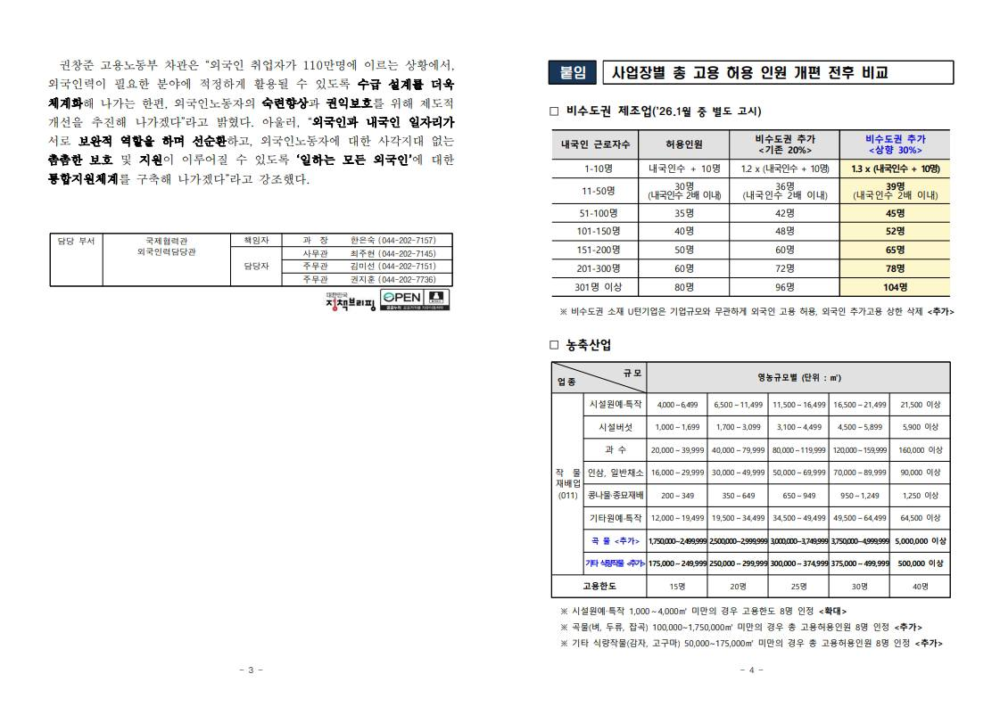

📢 Korea Will Accept 80,000 Foreign Workers in 2026
South Korea announced that 80,000 foreign workers will be accepted in 2026 under the E-9 visa system.

Most jobs will be in factories, farms, fishing, and construction.
There is also good news for workers who are open to jobs outside Seoul —
factories in local areas can now hire more foreign workers than before.

The government said foreign workers are still important to Korea’s workforce
and that job protection and worker rights will continue.

This means job opportunities in Korea will continue, not stop.

Source: Ministry of Justice · Ministry of Employment and Labor(https://www.moel.go.kr)

#Korea #E9Visa #WorkInKorea #ForeignWorkers #KoreaJobs #LaborRights
#OFWInKorea #ManggagawangDayuhan #TrabahoSaKorea #BuhayOFWKorea #KarapatanNgManggagawa

<!-- photos -->


